KAYAK · 2025 · Embedded conversational search
KAYAK AI Chat
KAYAK's standalone AI had strong capabilities but near-zero retention. I helped move it into an embedded conversational experience on KAYAK.com, then designed for the hardest part: keeping non-deterministic output coherent.
- Role
- Senior Product Designer, AI (lead designer)
- Team
- Product, engineering, user research
- Timeline
- 2025
- Scope
- Embedded chat, response system, intent logic
Why it mattered
At a glance
01Onboarding to AI Chat
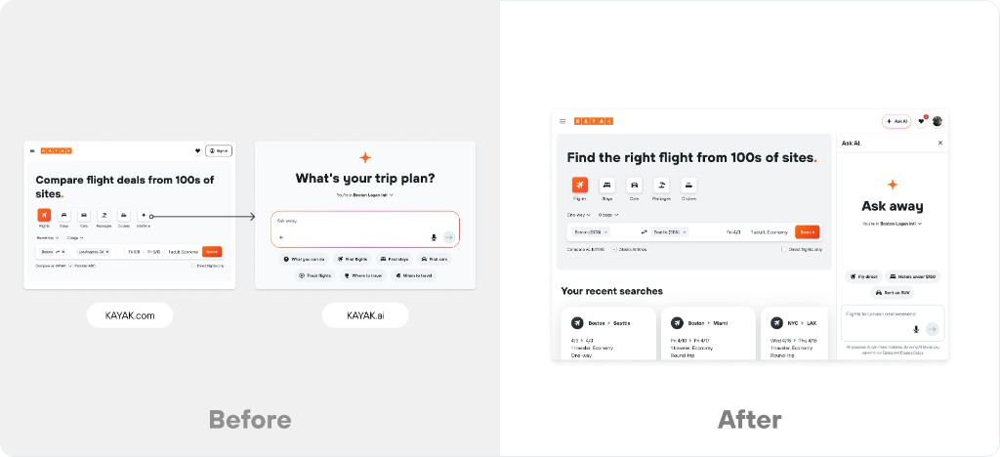
Standalone page → embedded drawer, zero context switching.
02Multi-intent output
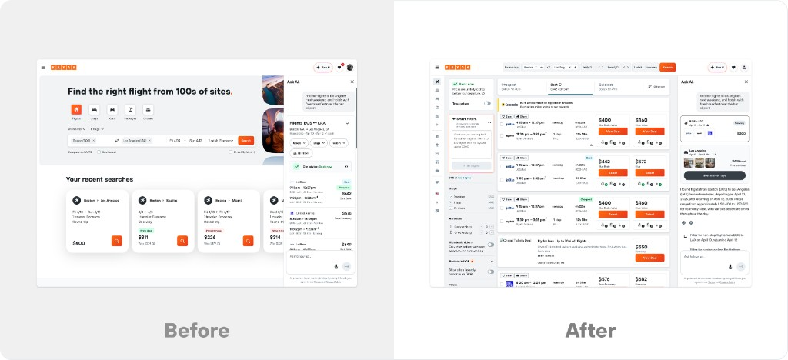
Single rich-text response → simultaneous flight and hotel widgets with follow-ups.
03Responsive chat
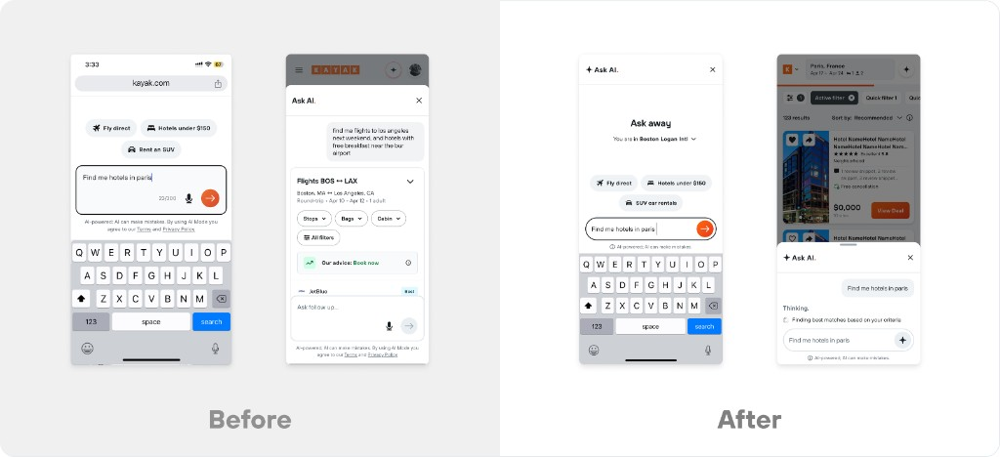
Congested mobile modal → streamlined single-line input with curated prompts.
The ghost town
A capable AI no one came back to
In 2024, KAYAK launched a standalone assistant, KAYAK.ai. It could answer complex travel questions, match deals to niche preferences, and check live flight status, then hand users to KAYAK.com to book. Despite heavy marketing and infrastructure spend, it drew little traffic and almost no return visits. Within a month, it was a ghost town.
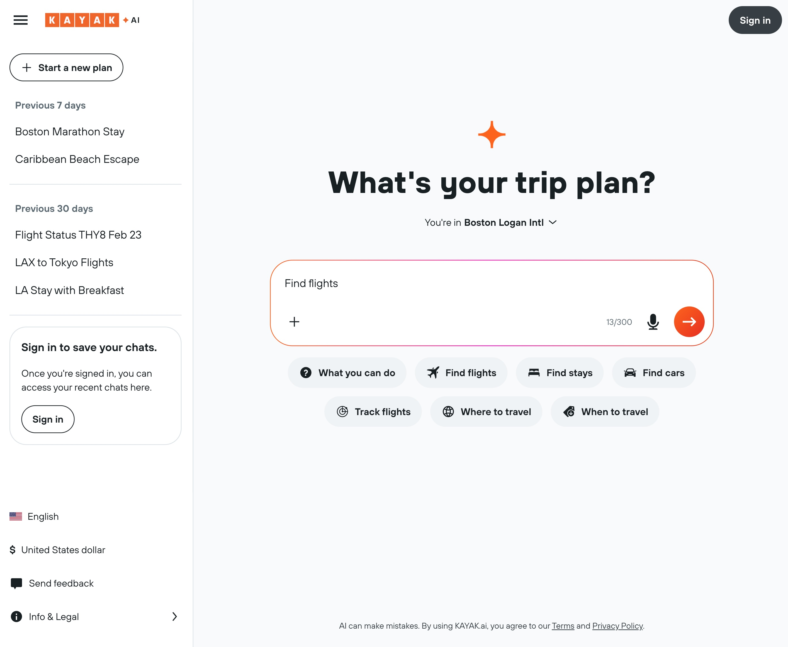
But the referral data told a different story. The small group who did cross from KAYAK.ai into core KAYAK behaved unlike anyone else: 5x the click-through of any other channel. AI-assisted users showed far stronger intent. The technology wasn't the problem, asking users to go somewhere new for it was.
User volume & click-through · June 2025
| Product | Total traffic | Click-through rate |
|---|---|---|
| KAYAK.com | ~50% | ~10% |
| KAYAK.ai | ~7% | ~45% |
Signal of opportunity. Tiny audience, outsized intent. KAYAK.ai users clicked through at roughly 5x KAYAK.com, the standalone model just couldn't get enough of them there.
The bet
Test the thesis before the rebuild
If the barrier was the destination, the fix wasn't a better KAYAK.ai. It was removing the destination and reframing the goal around the traveler.
“How can we land more users on KAYAK.ai?”
“How can we integrate AI better into the KAYAK ecosystem?”
That reframe turned one vague question into two things we could actually measure.
Two testable hypotheses
Users will adopt AI chat when it's embedded in KAYAK.com, not a standalone destination.
Users who engage with AI chat will lift KAYAK's core metrics: conversion and revenue.
The full vision, persistent multi-turn chat, carried real dev cost and migration risk. So I pushed for the cheapest test of the thesis first. Freeform text in the existing form would have needed a new backend to constantly tell natural language apart from structured airport queries. A separate AI mode avoided that, and gave us two things: risk isolation (if the experiment broke, only the experiment broke) and clean data to attribute any lift to AI.
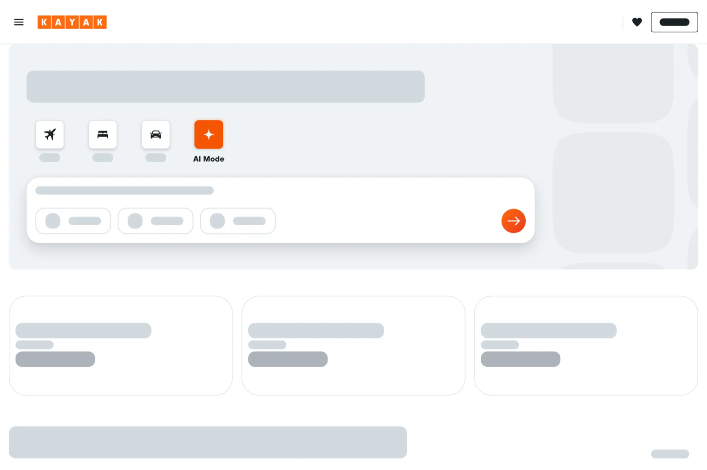
What the test returned
The revenue confirmed the thesis: embedding AI in a familiar flow converts. But usage hit a ceiling. NLP Search was single-turn by design, so people submitted one query and stopped, no way to refine, follow up, or explore. To go further, the architecture had to change.
Prompt engineering
Classify, or infer?
Before any visual design, the hardest problem was how the AI should work. We weighed two ways to turn a prompt into a response, and the choice shaped everything downstream.
Dest. →
Precise, but it assumed people think in search parameters. Add hotels, cars, activities and the grid multiplies, 3 × 3 × 3 × … exponential complexity.
Routes into KAYAK.com
Routes into KAYAK.ai
Infer intent, then resolve ambiguity. Sort a prompt into a rough bucket, then clarify within it in one step, so a vague prompt never dead-ends and new dimensions don't explode the model.
To align engineering and PM on that behavior before a mock existed, I mapped the intent logic as a jobs-to-be-done flow, then translated it into a runnable custom GPT. Stakeholders could type real prompts and watch the system respond, so we iterated the system prompt as a shared behavioral contract, not a static spec.
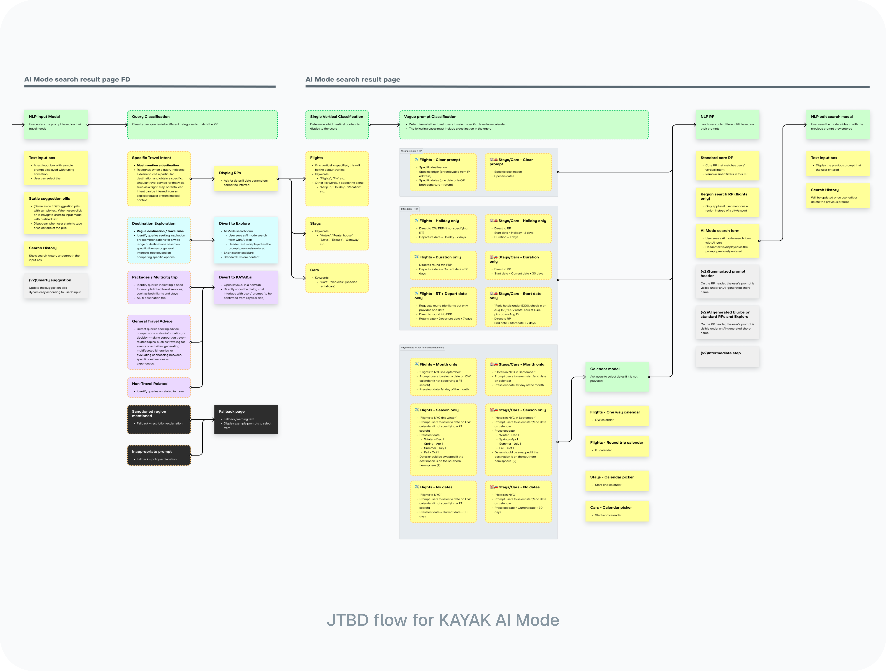
The behavioral spec
A jobs-to-be-done flow mapping every input type to a query category and calendar state.
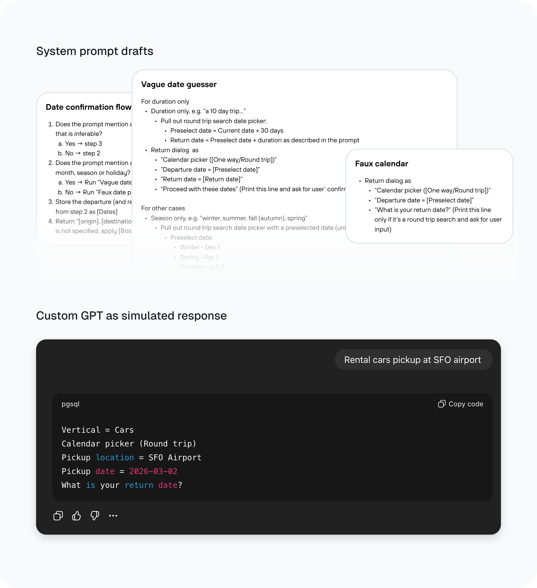
Run it, don't read it
The same logic as a custom GPT, so the team could test prompts live instead of reviewing a doc.
Scaling up
From one input to a conversation
With the revenue signal in hand, we built what we'd envisioned from the start: an omnipresent chat. The Chat v1 drawer launched site-wide, reachable from the front door, results, and detail pages. For the first time, users could have a conversation with KAYAK, not just search it.
Panel placement isn't cosmetic, it signals the AI's role. Left panels frame AI as a creative partner you co-create with; right panels frame it as a contextual assistant that stays out of the way. KAYAK Chat is the latter, so it belonged on the right.
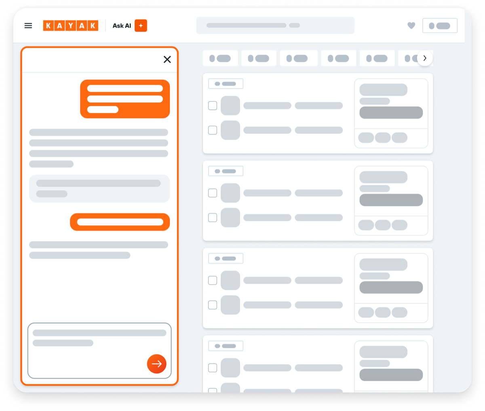
Left panel
Reads as a creative partner, co-create over many rounds (Lovable, ChatGPT Canvas).
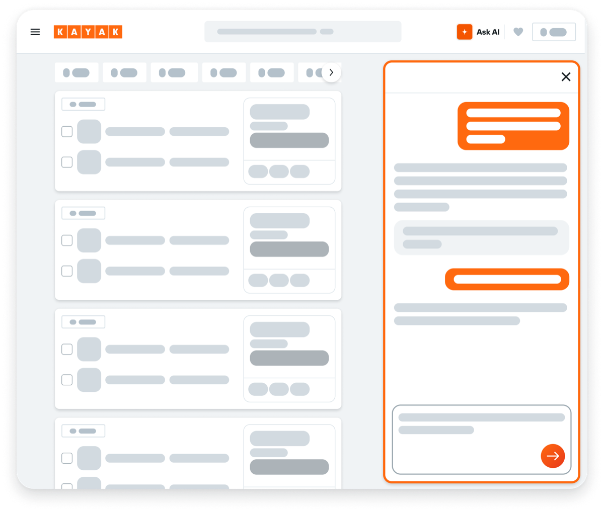
Right panelChosen
Reads as a contextual assistant, users stay on results, chat assists on demand.
KAYAK already had a right-side drawer for Trips. Reusing it meant zero new interaction model and a natural handoff: plan in chat, save to Trips in one motion.
The core craft
When the AI can say anything
Chat v1 was live. Then a single flight reply showed everything still wrong with it, three problems in one response.
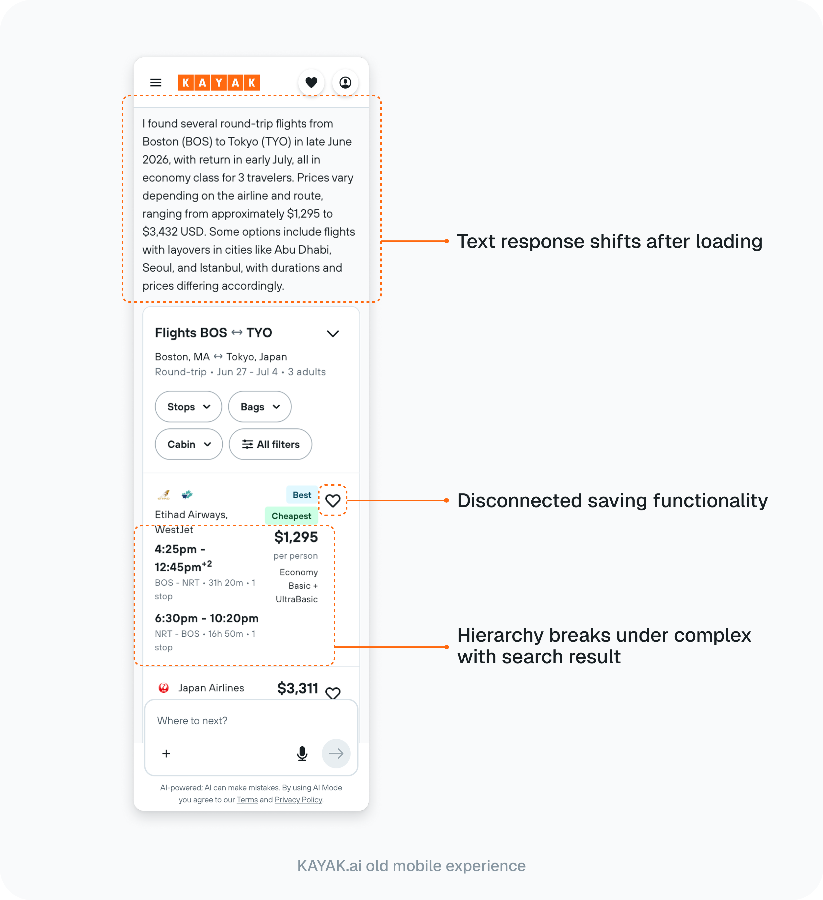
Saving was the easy call, handed back to the Trips drawer. The other two were real design problems. Multi-turn chat made output non-deterministic: one prompt could return a list, a comparison, a clarifying question, or a multi-vertical plan. So instead of designing one layout, I defined a fixed response anatomy, a constant order any answer pours into.
From the backend
Product KPI
UX requirements
To decide how much of a result belongs in chat versus the page, I tested three widget patterns with nine users, unmoderated. Pattern B, a condensed summary with thumbnails, won. But the scorecard was the small result. The real finding was how differently people framed the panel.
Persona 4 · theoretical
Reference Builder
N/A
Persona 1
Chat-as-Destination
2 / 9
Persona 3
Results-Page Purist
2 / 9
Persona 2
Chat-as-Wayfinder
5 / 9 · won
The majority read chat as a wayfinder. Not a place to act, but the fastest route to the right page. That settled the direction: chat orients and routes, it doesn't replace the results page.
So each response generates a vertical widget: a compact anchor in the panel, linked to a full results page in KAYAK's production layout where people already know how to act. The relationship stays predictable, one widget, one page, one state: apply a filter, a new URL spins up a new widget.
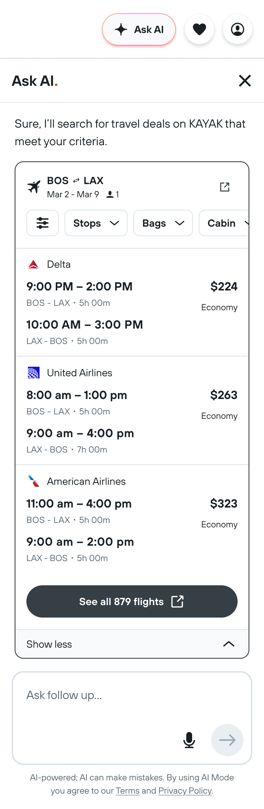
Collaboration & ownership
Owning behavior, not just screens
- Product
- Engineering
- User research
The highest-leverage work lived upstream of the UI: the intent logic, the behavioral contract, and the research that engineering and PM aligned on before mocks existed. I owned the experience from de-risking the test scope through the shipped drawer and its measured impact.
Reframe
Turned "make KAYAK.ai better" into a testable thesis: AI embedded in the flow people already use.
De-risk
Shipped NLP Search as a single-turn tracer bullet, at +14% booking revenue with neutral impact on core metrics.
Define
Set the intent inference model and a fixed response anatomy, prototyped as a runnable custom GPT.
Validate
Tested widget patterns with nine users; the framing, not the scorecard, steered chat toward a wayfinding layer.
Ship & measure
Launched Chat v1 site-wide, lifting engagement +123% over NLP Search with about 80% more messages per user.
Reflections
An embedded AI people actually use
Launched as an embedded drawer on KAYAK.com, Chat v1 lifted engagement +123% over NLP Search, with 80% more messages per user, a sign that people found enough value to keep the conversation going.
-
Ask before answering
One clarifying step costs seconds and saves users from dead-end sessions.
-
Classify intent, not query
A deal-hunter and a trip-planner can type the same words and need completely different responses.
-
Replace recaps with actions
7 of 9 users called text summaries "noise"; proactive follow-ups outperformed them every time.
-
Prototype with real data
Static mocks can't test an intent-driven system. Design for unknown outputs, not known inputs.
-
The most valuable work wasn't the UI
It was the behavioral specs, classifier logic, and research that made the UI possible. When those clicked, the pixels followed.